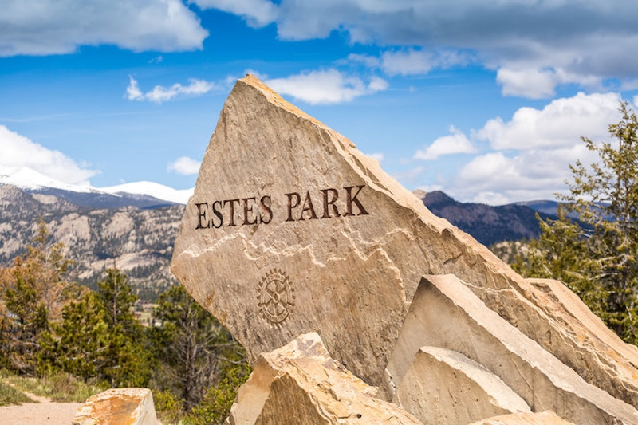
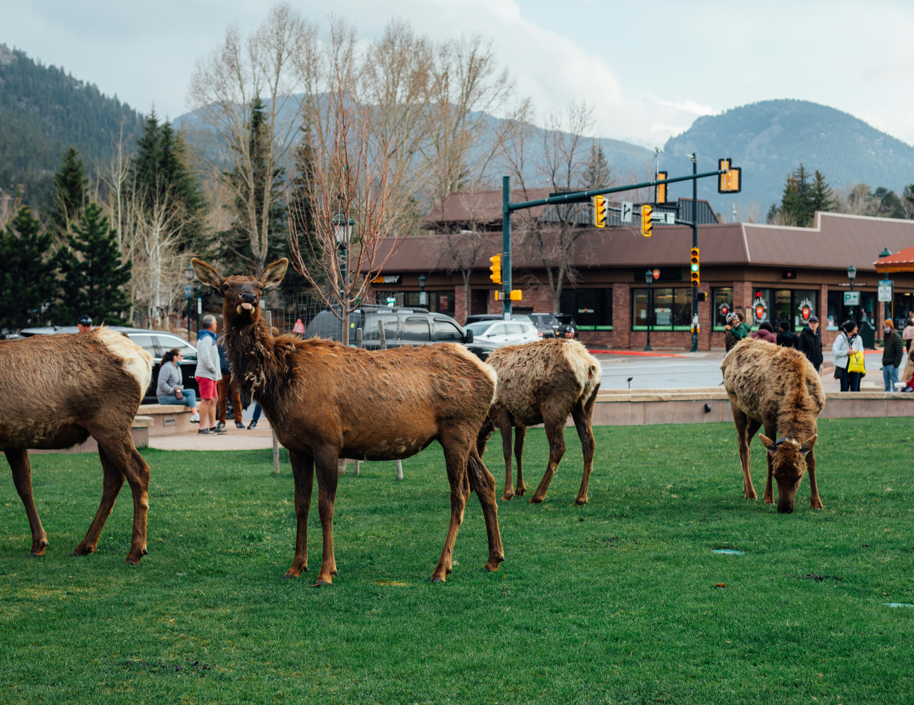
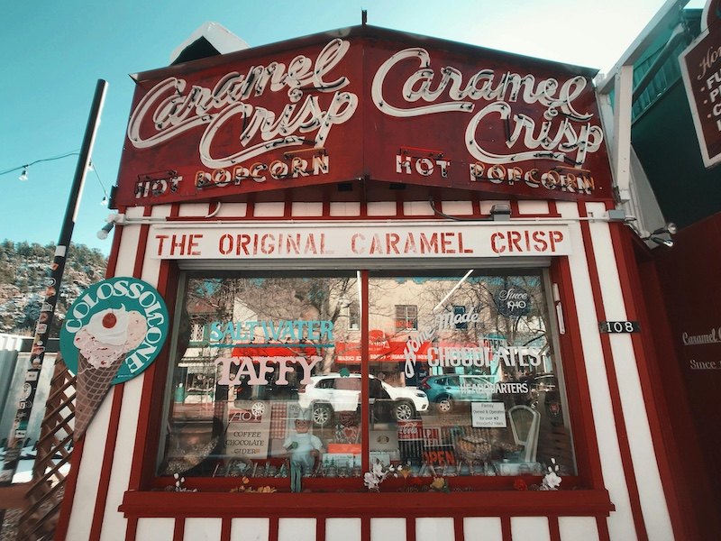
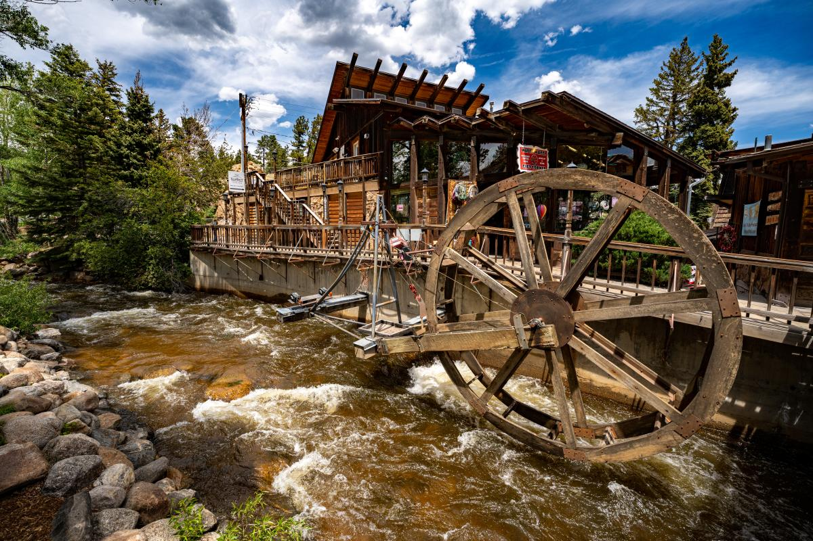

Estes Park
Estes Park is a charming town nestled in the heart of Rocky Mountain National Park. It is known for its stunning natural beauty, outdoor recreational opportunities, and rich history. Fun fact: Estes Park was founded in 1875 by a group of settlers who were drawn to the area's scenic landscapes.
Estes Park sign welcoming to this beautiful town, Photo by Jacek Sopotnicki
herd of horses on green grass field during daytime , Photo by Logan Gutierrez on Unsplash
Taffy and Popcorn Snack Bar, Photo by Sasha P
Tregent Park in Estes Park, Photo by Logan Gutierrez on Unsplash, visitestespark.com